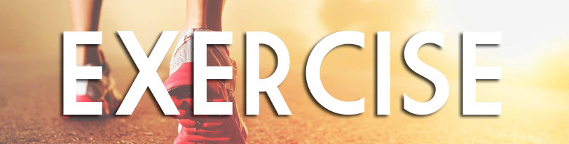

Being physically active is more than burning kilojoules and building muscle; it's also fun, social and essential for your health and well-being. Check out how exercise benefits your body and how much exercise you need to burn off high-energy foods.
How exercise affects the body
It might be pretty obvious that being active is really good for you - it gives you more energy, increases your self-confidence and may even help prevent scary stuff like heart disease.
Guidelines
-
Some is better than none
Doing any physical activity is better than doing none. If you currently do no physical activity, start by doing some, and gradually build up to the recommended amount.
-
Active every day
Be active on most, preferably all, days every week.
-
30 min +
Accumulate 150-300 minutes of moderate intensity physical activity or 75-150 minutes of vigorous intensity physical activity each week (or an equivalent combination of both moderate and vigorous).
-
Strength x 2
Do muscle strengthening activities on at least 2 days each week.
See for yourself!
Click on the circled areas and learn more about your body and the benefits of exercising!